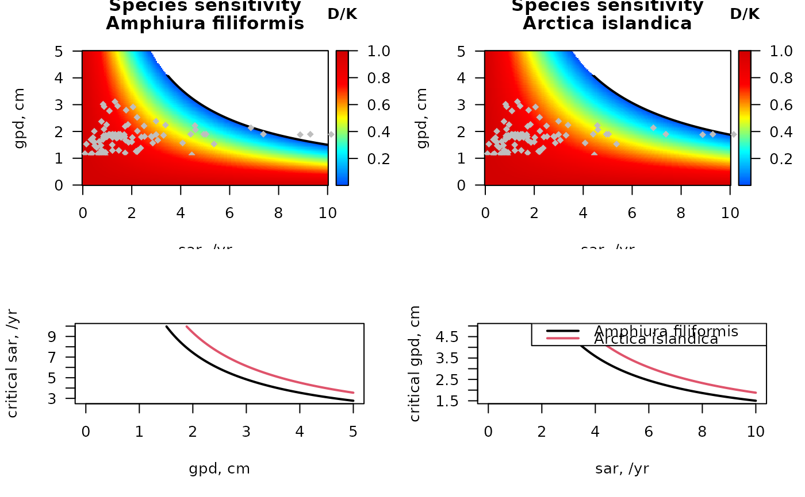
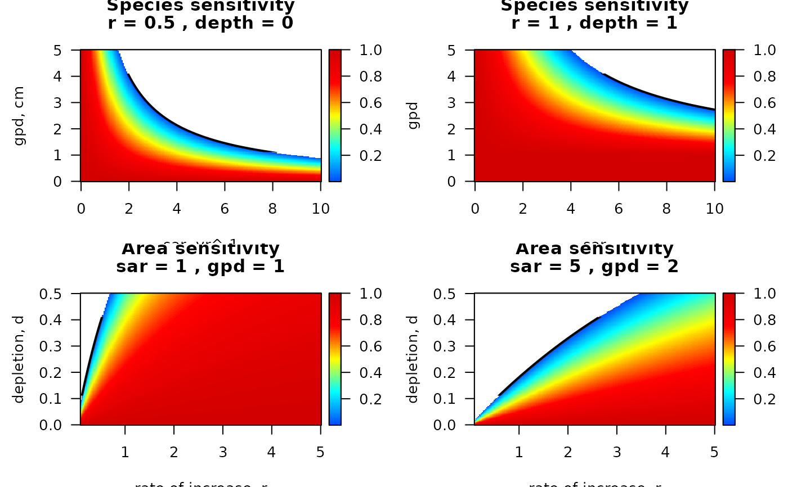

sensitivity.Rdsensitivity_taxon estimates for one taxon the density decrease for combinations of sar and gpd;
also estimates critical (sar x gpd) values for the taxon.
sensitivity_area estimates for one set of sar and gpd values the density decrease for combinations of r (rate of natural increase) and d (depletion);
also estimates critical (r x d) combinations for the area.
fishing intensity, estimated as Swept Area Ratio, units e.g. [m2/m2/year].
One number defining the area (sensitivity_area), or a vector (sensitivity_taxon) for which sensitivity needs to be estimated.
gear penetration depth, units e.g. [cm].
One number defining the area (sensitivity_area), or a vector (sensitivity_taxon) for which sensitivity needs to be estimated.
the rate of increase of each taxon, units e.g. [/year].
One number defining the taxon (sensitivity_taxon), or a vector (sensitivity_area) for which sensitivity needs to be estimated.
depletion fraction due to fishing, a vector (sensitivity_area) for which sensitivity needs to be estimated.
fractional occurrence of species in sediment layers, dimensionless.
A vector of the same length as uDepth. The sum of fDepth should equal 1. Will be used to estimate the depletion fraction d.
depth of the upper position of the sediment layers, units e.g. [cm].
A vector with length equal to the number of columns of fDepth.
arguments passed to the par_d function
function sensitivity_taxon returns a list with:
sar, the sequence of swept area ratios corresponding to DK, [/year]
gpd, the sequence of gear penetration depths corresponding to DK, [cm]
DK, the density/carrying capacity ratio, a matrix, corresponding to sar (rows) and gpd (column), [-]
critical_sar, the critical value of sar for each gpd, above which the taxon is extinct, [/yr]
critical_gpd, the critical value of gpd for each sar, above which the taxon is extinct, [cm]
r, the intrinsic rate of natural increase of the taxon, [/yr]
Depth_mean, the mean living depth of the taxon (sum(fDepth*uDepth)), [cm]
d_mean, the mean depletion fraction (for each gpd), [-]
function sensitivity_area returns a list with:
r, the sequence of intrinsic rate of natural increase, corresponding to DK, [/year]
d, the sequence of d, depletion fractions, corresponding to DK, [cm]
DK, the density/carrying capacity ratio, a matrix, corresponding to r (rows) and d (column), [-]
critical_r, the critical value of r for each d, below which the taxon is extinct, [/yr]
critical_d, the critical value of d for each r, above which the taxon is extinct, [-]
sar, the swept area ratio of the area, [/yr]
gpd, the gear penetration depth of the area, [cm]
run_perturb for how to run a disturbance model.
Traits_nioz, for trait databases in package Btrait.
MWTL for data sets on which fishing can be imposed.
map_key for simple plotting functions.
to be added
## -----------------------------------------------------------------------
## sensitivity for two species in the Dutch part of the Northsea
## -----------------------------------------------------------------------
par(mfrow = c(2,2), las = 1)
# parameters for A. filiformis and for Arctica islandica
subset(MWTL$fishing,
subset = (taxon == "Amphiura filiformis"))
#> taxon p0 p0_5cm p5_15cm p15_30cm p30cm Age.at.maturity r
#> 25 Amphiura filiformis 0 0.75 0.25 0 0 4 0.64
S_af <- sensitivity_taxon(r = 0.64,
fDepth = c(0.75, 0.25),
uDepth = c(0, 5))
subset(MWTL$fishing,
subset = (taxon == "Arctica islandica"))
#> taxon p0 p0_5cm p5_15cm p15_30cm p30cm Age.at.maturity r
#> 38 Arctica islandica 0 0.6 0.4 0 0 4 0.64
S_ai <- sensitivity_taxon(r = 0.64,
fDepth = c(0.6, 0.4),
uDepth = c(0, 5))
# image, black = extinct
image2D(x = S_af$sar, y = S_af$gpd, z = S_af$DK,
xlab = "sar, /yr", ylab = "gpd, cm",
main = c("Species sensitivity",
"Amphiura filiformis"),
col = jet2.col(100), clab = "D/K")
lines(S_af$sar, S_af$critical_gpd, lwd = 2)
# add the stations in the MWTL data (from Btrait)
points(MWTL$abiotics$sar, MWTL$abiotics$gpd,
pch = 18, col = "grey")
# image, blue = extinct
image2D(x = S_ai$sar, y = S_ai$gpd, z = S_ai$DK,
xlab = "sar, /yr", ylab = "gpd, cm",
main = c("Species sensitivity",
"Arctica islandica"),
col = jet2.col(100), clab = "D/K")
lines(S_ai$sar, S_ai$critical_gpd, lwd = 2)
# add the stations in the MWTL data (from Btrait)
points(MWTL$abiotics$sar, MWTL$abiotics$gpd,
pch = 18, col = "grey")
matplot(S_af$gpd, cbind(S_af$critical_sar, S_ai$critical_sar),
xlab = "gpd, cm", ylab = "critical sar, /yr",
type = "l", lty = 1, lwd = 2)
matplot(S_af$sar, cbind(S_af$critical_gpd, S_ai$critical_gpd),
xlab = "sar, /yr", ylab = "critical gpd, cm",
type = "l", lty = 1, lwd = 2)
legend("topright", col = 1:2, lty = 1, lwd = 2,
legend = c("Amphiura filiformis", "Arctica islandica"))

## -----------------------------------------------------------------------
## sensitivity for two stations in the Dutch part of the Northsea
## -----------------------------------------------------------------------
par(mfrow = c(2, 2), las = 1)
# parameters for stations WADDKT04, FRIESFT15
subset(MWTL$abiotics,
subset = (station== "WADDKT04"),
select = c(station, sar, gpd))
#> station sar gpd
#> 97 WADDKT04 11.81742 1.898136
S_W <- sensitivity_area(sar = 11.817,
gpd = 1.90,
r.seq = seq(0, 11, length.out = 200),
d.seq = seq(0, 0.2, length.out = 200))
subset(MWTL$abiotics,
subset = (station == "FRIESFT15"),
select = c(station, sar, gpd))
#> station sar gpd
#> 48 FRIESFT15 0.1466945 1.52917
S_F <- sensitivity_area(sar = 0.15,
gpd = 1.53,
r.seq = seq(0, 11, length.out = 200),
d.seq = seq(0, 0.2, length.out = 200))
# The species in the MWTL data (from Btrait)
Fish <- MWTL$fishing
# depletion for all MWTL species in station WADDKT04
Fish$dW <- par_d(
gpd = 1.90,
fDepth = Fish[, c("p0", "p0_5cm", "p5_15cm", "p15_30cm", "p30cm")],
uDepth = c( 0, 0, 5, 15, 30))
# depletion for all MWTL species in station FRIESFT15
Fish$dF <- par_d(
gpd = 1.53,
fDepth = Fish[, c("p0", "p0_5cm", "p5_15cm", "p15_30cm", "p30cm")],
uDepth = c( 0, 0, 5, 15, 30))
# image of station sensitivity, white = extinct (D/K = NA)
image2D(x = S_W$r, y = S_W$d, z=S_W$DK,
xlab = "r, /yr", ylab = "d, -",
main = c("Area sensitivity",
"WADDKT04"),
col = jet2.col(100), clab = "D/K")
lines(S_W$r, S_W$critical_d, lwd = 2)
points(Fish$r, Fish$dW,
pch = 18, col = "grey")
# image, white = extinct (D/K = NA)
image2D(x = S_F$r, y = S_F$d, z=S_F$DK,
xlab = "r, /yr", ylab = "d, -",
main = c("Area sensitivity",
"FRIESFT15"),
col = jet2.col(100), clab = "D/K")
lines(S_F$r, S_F$critical_d, lwd = 2)
points(Fish$r, Fish$dF,
pch = 18, col = "grey")
matplot(S_W$d, cbind(S_W$critical_r, S_F$critical_r),
xlab = "d, -", ylab = "critical r, /yr",
type = "l", lty = 1, lwd = 2)
matplot(S_W$r, cbind(S_W$critical_d, S_F$critical_d),
xlab = "r, /yr", ylab = "critical d, -",
type = "l", lty = 1, lwd = 2)
legend("topright", col = 1:2,
legend = c("WADDKT04", "FRIESFT15"))
## -----------------------
## sensitivity_taxon
## -----------------------
par(las = 1, mfrow = c(2,2))
S_sp1 <- sensitivity_taxon(r = 0.5)
image2D(x = S_sp1$sar, y = S_sp1$gpd, z=S_sp1$DK,
xlab = "sar, yr^-1", ylab = "gpd, cm",
main = c("Species sensitivity",
paste0("r = ", S_sp1$r,
" , depth = ", S_sp1$Depth_mean)),
col = jet2.col(100))
lines(S_sp1$sar, S_sp1$critical_gpd, lwd = 2)
S_sp2 <- sensitivity_taxon(r = 1, uDepth = 1)
image2D(x = S_sp2$sar, y = S_sp2$gpd, z=S_sp2$DK,
col = jet2.col(100),
xlab = "sar", ylab = "gpd",
main = c("Species sensitivity",
paste0("r = ", S_sp2$r,
" , depth = ", S_sp2$Depth_mean)))
lines(S_sp2$sar, S_sp2$critical_gpd, lwd = 2)
## -----------------------
## sensitivity_area
## -----------------------
AA <- sensitivity_area(sar = 1, gpd = 1)
image2D(x = AA$r, y = AA$d, z=AA$DK, col = jet2.col(100),
xlab = "rate of increase, r", ylab = "depletion, d",
main = c("Area sensitivity",
paste0("sar = ", AA$sar, " , gpd = ", AA$gpd)))
lines(AA$r, AA$critical_d, lwd = 2)
A2 <- sensitivity_area(sar = 5, gpd = 2)
image2D(x = A2$r, y = A2$d, z=A2$DK,
col = jet2.col(100),
xlab = "rate of increase, r", ylab = "depletion, d",
main = c("Area sensitivity",
paste0("sar = ", A2$sar, " , gpd = ", A2$gpd)))
lines(A2$r, A2$critical_d, lwd = 2)
